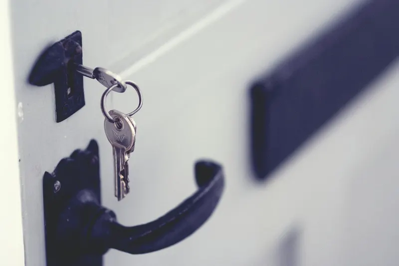
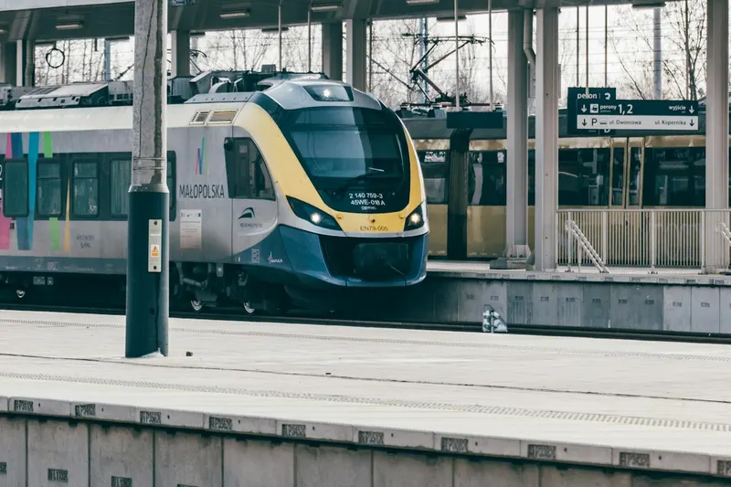
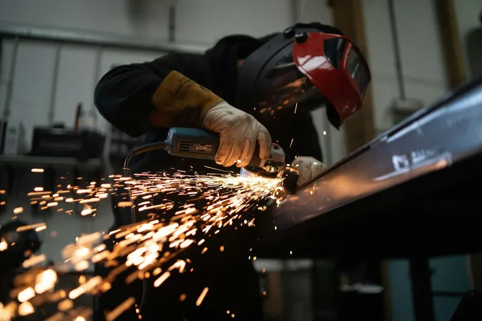

Makina-erremintak eta ekipamendu industriala
Karenatuak, ateak, bankadak, koadroak eta armairuak zure markaren RAL kolorean, akabera berdinarekin piezatik piezara eta loteetik lotera.
Gipuzkoako enpresentzako hauts-pintura
Legutiotik Arrasatera 25 minutu daude, Eibarrera 40 eta Donostiara ordubete pasatxo. Gipuzkoako industriarentzat piezak eta egiturak pintatzen ditugu, baita kostaldera doazenak ere, aurrekontu irmoa 24 orduan.

Debagoienean eta Debabarrenean makina-erremintak, osagaiak, sarrailagintza eta burdineria daude; Goierrin, trenbide-materiala eta galdaragintza; Tolosaldean, Donostialdean eta Bidasoan, tailerrak, arotzeria metalikoa eta eraikuntza.
Horietako askorentzat Legutio kostaldea baino gertuago dago: Arrasatetik edo Bergaratik ordu erdian irits daiteke.
Karenatuak, ateak, bankadak, koadroak eta armairuak zure markaren RAL kolorean, akabera berdinarekin piezatik piezara eta loteetik lotera.
Burdineria, euskarriak, tapak eta seriezko pieza txikiak, katean banan-banan zintzilikatuta.
Barandak, itxiturak, eskailerak eta egiturak. Itsasotik gertu, azpian zinkez aberastutako inprimazioarekin.
Eskualde bakoitzean norentzat pintatzen dugun:

Sarrailagintza eta burdineriaBurdineria, heldulekuak, plakak eta seriezko pieza txikiak.
Mugikortasuna eta trenbideaMaterial mugikorraren markoak, euskarriak, kutxak eta piezak. Makina-erremintakMakinen karenatuak, ateak, bankadak eta armairuak.
Makina-erremintakMakinen karenatuak, ateak, bankadak eta armairuak.
Galdaragintza eta sarrailagintzaMultzo soldatuak, barandak, itxiturak eta hodiak.Legutioko lantegitik errepidez dauden gutxi gorabeherako distantziak:
ISO 12944-2 arauaren arabera, gazitasun moderatuko kostaldeari C4 korrosibitate-kategoria dagokio, eta itsasertzeko lehen lerroan C5era ere irits daiteke. Barnealdeko haranetan C3 izan ohi da.
Donostiara, Pasaiara, Hondarribira edo itsasotik gertuko edozein lekutara doazen piezetarako, zinkez aberastutako inprimazioa eta poliesterra gomendatzen ditugu: gure C4-H sistema, zigilua homologatzeko bidean. Barnealdean, kanporako poliester-geruza bakarra nahikoa izan ohi da.
Ez. Piezak Legutioko gure lantegian entregatu eta jasotzen dira (San Bartolome kalea 11, Goiain industrialdea), zure garraioarekin edo zuk aukeratutako garraiolariarekin. Garraio-kostuak ez daude barne; garraioa behar baduzu, kasuz kasu aztertuko dugu. Ordutegia: astelehenetik ostiralera, 7:00etatik 15:00etara.
Ohiko epea astebetekoa da, piezak lantegian sartzen direnetik. Aurrekontu irmoa lehenago bidaltzen dizugu, 24 lanordu baino lehen.
Gehienez 6 m luze, 2 m garai eta 0,65 m zabal diren piezak onartzen ditugu, bakoitza 165 kg-koa gehienez. Zure pieza handiagoa bada, galdetu iezaguzu.
Zinkez aberastutako inprimazioa eta kanporako poliester-akabera, edo altzairu galbanizatutik abiatzea. Esan iezaguzu non egongo den pieza eta aurrekontuan sistema proposatuko dizugu.
 Pieza eta egituren termolakatzea
Epoxi, poliester edo epoxi-poliester motako hauts-pintura altzairurako, altzairu galbanizaturako eta aluminiorako, pieza txikietatik handietara. RAL kolore-karta osoa, eta Pantone edo NCS eskatuta. Akabera leunak, testura finekoak edo gofratuak, matetik distiratsura; metalizatuak eta perlatuak ere bai.
Pieza eta egituren termolakatzea
Epoxi, poliester edo epoxi-poliester motako hauts-pintura altzairurako, altzairu galbanizaturako eta aluminiorako, pieza txikietatik handietara. RAL kolore-karta osoa, eta Pantone edo NCS eskatuta. Akabera leunak, testura finekoak edo gofratuak, matetik distiratsura; metalizatuak eta perlatuak ere bai.
 Zinkez aberatsa den inprimazioa
Galbanizatzearen edo zinkatzearen alternatiba: zink-hautsezko inprimazioak altzairua babesten du, eta gainean hauts-pinturazko akabera aplikatzen dugu. C4-H korrosioaren aurkako babes-sistema, ziurtagiria lortzeko prozesuan.
Zinkez aberatsa den inprimazioa
Galbanizatzearen edo zinkatzearen alternatiba: zink-hautsezko inprimazioak altzairua babesten du, eta gainean hauts-pinturazko akabera aplikatzen dugu. C4-H korrosioaren aurkako babes-sistema, ziurtagiria lortzeko prozesuan.
 Aluminiozko profilen lakatzea
Profilak behar duzun kolore eta akaberan, linea eta kontrol berarekin.
Aluminiozko profilen lakatzea
Profilak behar duzun kolore eta akaberan, linea eta kontrol berarekin.
 Altzairu galbanizatuaren termolakatzea
Gasgabetzea eta gainazalaren prestaketa berezia, poroak eta burbuilak saihesteko: zinkaren eta hauts-pinturaren sistema duplexa.
Altzairu galbanizatuaren termolakatzea
Gasgabetzea eta gainazalaren prestaketa berezia, poroak eta burbuilak saihesteko: zinkaren eta hauts-pinturaren sistema duplexa.
 Laser bidezko grabatua eta UV inprimaketa
Laser bidezko grabatua, UV inprimaketa erliebearekin, tanpografia eta serigrafia: logotipoak, erreferentziak eta adierazpenak piezan.
Laser bidezko grabatua eta UV inprimaketa
Laser bidezko grabatua, UV inprimaketa erliebearekin, tanpografia eta serigrafia: logotipoak, erreferentziak eta adierazpenak piezan.
Aurrekontu irmoa, idatziz, 24 lanordu baino gutxiagoan. Nahiago baduzu, deitu.